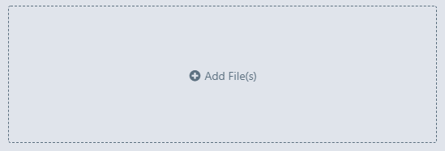
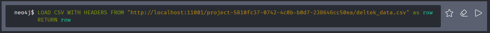
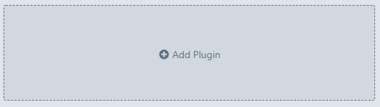

Neo4j Tutorial¶
This tutorial demonstrates how to convert from a simple relational database schema to a graph database. We'll be building a basic graph of Environmental Incentive's current project teaming structure. The graph will include staff, the projects they work on, and the organization of projects under Practice Areas. The purpose of the graph will be to explore the connectivity of EI's professional network across teams. (Staff will be said to work on a project if they are authorized to bill on a project). See also the Neo4j-provided tutorial describing the Windward database.
1. Project set up¶
1.1 Create a project directory as you would otherwise
1.2 Open Neo4j Desktop
1.3 Create a New Project

2. Get the data¶
Let's assume our data is stored in a relational database with the following tables:
Staff:
| Name |
|---|
| Abragan, Maria Celes L |
| Alexandrovich, Andrew |
Projects:
| Code | Project | Practice_Area |
|---|---|---|
| 1001 | MI2 | International |
| 1002 | LAC ESSC | International |
2.1 First we'd join the staff to the projects table to get a flat file. Each staff x project combo would be represented as a row, looking like:
| Code | Project | Practice_Area | Name |
|---|---|---|---|
| 1001 | MI2 | International | Alexandrovich, Andrew |
| 1001 | MI2 | International | Ajroud, Brittany N |
2.3 Now export that table as a CSV and save to your data/ folder for your project (i.e., save this file in the main project's directory--create one if necessary. This step has nothing to do with Neo4j, you should have a project directory set up already).
2.4 In Neo4j Desktop, click 'Add Files' and add the saved CSV.

3. Create a graph database¶
3.1 Create a new graph database

3.2 Select 'Create a Local Graph'

3.3 Provide a graph name and password (remember the password). Click 'Create'.

3.4 Start the graph and then open with the Neo4j browser. The Browser will open in a new application window.

4. Populate the graph¶
We'll use the LOAD CSV command to read in the data from the CSV we created in step 2. It may be helpful to have the CSV open to reference the header names.
4.1 In the Neo4j Desktop client, open the menu for the file you previously uploaded and select 'Copy url to clipboard'. The url is the most direct path (the file path doesn't include the file name, so is less useful here).

4.2 With the URL copied, return to the Neo4j Browser and type the following, then click the play button:
1 | LOAD CSV WITH HEADERS FROM <paste URL here> as row RETURN row |
This will check that the file is accessible and return a JSON representation of the data row by row, helpful if you need to see the structure of the data.
In the Browser, it would look like this:

4.3 Import entities as nodes.
We'll want to import each entity as a node before we create relationships. Use 'Shift+Enter' to input multi-line commands into the terminal.
1 2 3 | LOAD CSV WITH HEADERS FROM <paste URL here> as row MERGE (e:Employee {name: row.Name}) RETURN e |
You can also access columns with their cell names (row."D2") or by index (row[1] (note indexing starts at 1)).
You should see a graph with all of the nodes for each employee in the Browser.
Now that we have the hang of it, we'll load the remainder of the entities all at once:
1 2 3 | LOAD CSV WITH HEADERS FROM <paste URL here> as row MERGE (:Project {name: row.Project, code: toInteger(row.Code)}) MERGE (:PracticeArea {name: row.Practice_Area}) |
Notice here that we transformed the Code column to integer before reading in. All columns are read as text unless specified using toInteger(), . Also note that we read the Code as a property of the Project node, rather than as it's own node--not every column needs to be a node. Finally, we did not assign a variable name to each node since we did not want to return anything.
Some other tips:
-
You can create a key for each imported row on the fly using the
linenumber()command (key: {linenumber()}) -
When naming variables, don't use reserved keywords.
- Review the Style Guide to make your code and the names of your nodes, relationships, and properties easier to read and more consistent.
4.4 Add relationships.
Now that nodes are created, we can add relationships between them. We'll use the CSV again for this, by matching the Project to the Practice Area row by row, and then establishing the relationship.
1 2 3 4 5 | LOAD CSV WITH HEADERS FROM <paste URL here> as row MATCH (a: PracticeArea {name: row.Practice_Area}) MATCH (p: Project {code: row.Code}) MERGE (a)-[r:OWNS]->(p) RETURN (a)-[r]->(p) |
Here we identify (match) the nodes PracticeArea and Project of each row in the CSV, find those in the graph, and add (merge) a relationship of 'OWNS'. We return the graph illustrating these relationships.
If you need to remove relationships you can use:
1 2 | MATCH ()-[r:OWNS]-() DELETE r |
Let's add the relationship between employees and the projects the work on from the CSV:
1 2 3 4 | LOAD CSV WITH HEADERS FROM <paste URL here> as row MATCH (e: Employee {name: row.Name}) MATCH (p: Project {code: row.Code}) MERGE (e)-[:WORKS_ON]->(p) |
4.5 Add any missing relationships.
This example illustrates the power of graph databases. I happen to know that one project is owned by two practice areas. This is a rare exception, and had this been a relational database it would have been a pain--you'd need to migrate from a one-to-many relationship to a many-to-many relationship, which would break the schema. Here, we just add one more relationship.
Let's first check to see which practice area the project (Walton) is currently assigned to:
1 2 | MATCH (a: PracticeArea)-[:OWNS]-(p: Project {name: "Walton"}) RETURN p, a |
This will show us that Walton is owned by Habitat. So, let's add a relationship with International:
1 2 3 | MATCH (a: PracticeArea {name:'International'}) MATCH (p: Project {name: 'Walton'}) MERGE (a)-[:OWNS]->(p) |
And then we'll check that both relationships still exist (you can click the log entry for when we used this previously to quickly load it again):
1 2 | MATCH (a: PracticeArea)-[:OWNS]-(p: Project {name: "Walton"}) RETURN p, a |
4.6 Review schema
You can now review the schema, which will look like this:

The command to return a schema is CALL db.schema.visualization, however note that this was created in Bloom (see instructions).
5. Evaluate 'closeness'¶
Closeness is a graph data science algorithm that can detect nodes that are able to spread information efficiently through a graph. This is exactly what we'd like to quantify to see who is well-connected, and who is not, in our professional network.
You have two options for executing graph data science algorithms. For a no-code solution (recommended to begin), install and open the Graph Data Science Playground. If you'd prefer using the terminal in Desktop, install the Graph Data Science Library. This tutorial will focus on the Graph Data Science Playground. For an intro video, see here.
6.1 Install the Graph Data Science playground. In the Neo4j Desktop client, select the split button 'Open' for your graph and select 'Graph Apps Gallery'. Find the card for Graph Data Science Playground and click install (or paste the URL in the install bar as described here). The Playground will now be available under the 'Open' split button.
OR
Install the Graph Data Science library. In the Neo4j Browser client, add the Graph Database Plugin by clicking Add Plugin and selecting the Graph Database plugin.

6.2 Open the Graph Data Science Playground using the 'Open' split button in the Neo4j Desktop.
6.3 Run the closeness algorithm. Select the Centralities category of algorithms, and then locate the Closeness algorithm in the menu bar. Set the 'Label' and 'Relationship Type' as 'Any'. This will allow us to find which node, whether an employee, a project, or a practice area, has the best ability to transmit information*. Change the 'Relationship Orientation' to 'Undirected' since information can flow either direction. Check the box to Store results, which will write the results into a new property in our nodes so we can access it later. Increase the 'Rows to Show' to 100 so you can see all nodes. Hit Run.

You can explore the results with the Chart or Visualization in the Playground. You can also see the code so you could write it with the Graph Data Science Library in the Browser if needed.
*Note that because employees are not connected to each other, we cannot simply run the closeness algorithm on employees only. We would need to add a relationship between employees whenever they are connected by a project to evaluate only employees, rather than all nodes in the graph.
6. Explore the graph¶
The best way to explore the graph is in Neo4j Bloom, which comes standard with Neo4j Desktop.
6.1 In Neo4j Desktop, use the 'Open' split button to open with Neo4j Bloom.
6.2 Use the suggested perspective. Perspectives are views on the data that can include or exclude certain parts of the graph. For our purposes, we want to see everything. The suggested perspective will get us there quickest. If you need to configure your own perspective, check out this video.
6.3 Show Employees and Projects by searching. In the search bar, type Employee WORKS_ON and hit enter. This will return all employees and the projects they work on.
6.4 Re-color the Employee nodes by closeness. In the right panel, click on the colored employee legend item and select 'Rule-based' to apply a color based on the closeness score. Review the results in the Graph Data Science Library to see the minimum and maximum values. Make sure 'Apply Color' is switched on.

That's it! You can now explore in Bloom by zooming and panning to see who is connected and how. Here's the final graph:

Creating a schema in Bloom¶
To get a pretty representation of your schema, first color and provide icons for each node, and optionally color each relationship in Bloom. Next, create a search phrase with the following code as the Cypher query:
1 2 3 4 | CALL db.schema.visualization() YIELD nodes, relationships UNWIND nodes as n UNWIND relationships as r RETURN n, r |
Enter the search phrase in the search bar to get the schema.